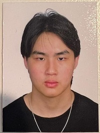

Welcome To Our Team Profile!

Team Profile of Group 27 Thursday
Yifan Shen

Hi, my name is Yifan Shen, Yvon is my English name. I am from Shanghai, an international metropolis located in the middle of the eastern coastline of China. Chinese is my native language. I have been in Melbourne for about three years. Throughout high school, because of my strong interest in IT, I have studied Applied Computing and Software Development. Computers have always given me a platform to demonstrate my creativity and increase my general knowledge. For my previous coursework, I designed a project plan which related to the COVID-19 drone monitoring in Applied Computing and made a program which I called it for "Filter Bubble" in Software Development. This gave me a great number of experiences in IT. In my spare time, I sometimes create some small programs, testing out new functions or combining old features which provides me a good opportunity to see my progress as a software developer. The major for further education that I pursue here in RMIT is Information Technology. In my leisure time, I have a great number of hobbies. Playing the piano can be one of them. Doing sports is also an integral part of my life. In my spare time, I love road-bike cycling. During the ride, I can not only relax my mind, exercise my body, but also enjoy the beautiful scenery along the way. I also enjoy playing tennis, basketball and badminton. Collecting things is also one of my favourite hobbies, ranging from sneakers, Pokémon cards, coins, stamps, etc. My most-liked thing to do on vocations is to travel. It is undoubtedly a fantastic thing to go and see where you want to go, photographing and discover the beauty of the earth. The place I most look forward to is Antarctica. For photography, for adventure, for icebergs, for wildlife, for another world…
Roy Loh
Greetings, my name is Roy Loh. I am a Malaysian Chinese international student studying information technology in RMIT university. I completed my WACE exams in 2020 but took a gap year due to Covid. I can speak English and mandarin. I enjoy watching videos on computer setups I cannot afford on the internet and anime in my free time. I work casually as a coffee barista at a hotel. As an international student in Melbourne, I find it quite challenging due to it being a new environment, however I am slowly getting used to the culture here. I dream to earn enough money so I can travel around the world. I aspire to work in the technology industry in the future and I hope to learn useful skills such as programming and broaden my knowledge regarding the world of tech.
Michael Khalil

Hello I'm Michael Khalil, I'm currently 18 years of age as of 2022 and just finished highschool last year completing VCE. As of this year I am currently enrolled at RMIT Melbourne studying my first year for my Bachelor of Information technology degree. I was born here in Australia but both sides of my family came from Egypt, with both my parents moving from Egypt to Melbourne as migrants. Because of my constant exposure to Egyptian culture and the Arabic language, I understand spoken Arabic vaguely (but cant read it!) and can barely speak it. Through primary and high school I also know basic Italian. My hobbies and interests include, Video Games, computer hardware, IT as a whole, japanese cars and modifying them, as well as motorsports in general (especially Formula 1!), and even a bit of anime.
Yao Lin
Hi, I am Yao Lin, I come from China. This is my second semester of Information Technology, very passionate about technology, and always curious about how technology works. I like to spend some time exploring various programming topics and new tech when I am free, other than that I love sports, my favourite sports are swimming and table tennis.
Jin Guo

Hello I’m Jin Guo, Andy is my English name. I'm currently 18 years old and just finished year 12 last year, and currently studying at Rmit Bachelor of IT. I was born and raised in tonga, an island located to the east side of Australia, close to New zealand. Tonga is a beautiful island surrounded with white beaches and coral reefs and covered with tropical rainforests. Although I was born in tonga, both my parents are chinese therefore I am from the nationality of China. The language that we speak at home is Mandarin no matter whether our family is in Tonga or Australia. My hobbies and interests are actually playing basketball and watching the nba, video games and sneakers.
Taha Elsukkari

I am Taha! I was born in Australia during late 2003. My parents on the other hand are both from Lebanon, a small country off the coast of the Mediterranean Sea. I can speak English and a fair amount of Arabic. For fun I mostly go out with my friends or play games for fun such as valorant or elden ring.I enjoy watching motorsports such as formula 1. I graduated from Minaret College in 2021, so I am currently in my first year of Bachelor of IT.
Group Processes
Career plans
Project Description
Overview
Aims
Our concept is a smartphone application that functions as a virtual wallet, serving as a central location for all types of virtual cards, QR codes, and virtual tickets. As there are many different types of services that can store credit cards (e.g., apple pay and google play), and some less popular virtual cards and/or QR Codes used in other non wallet apps may require a different application or may not even be obtainable on a virtual wallet service, a user may need various applications and accounts to use any of their virtual cards on their phone. Our aim is to provide a functioning mobile application that integrates the use of near field communication (NFC) with Card / QR storage in order to essentially provide users with a unified “eWallet” making a card holder’s life easier and more efficient when dealing with scannable items on their phone, with the use of this application, our biggest target to achieve would be to create a functioning ewallet that allows for a convenient and straightforward experience for all users.
A goal that will assist us in achieving our aim would be for large institutions and banks to combine their cards with our application, this could mean that banking customers would no longer require physical cards but instead their bank cards would be immediately incorporated into our application, This is also true for any card producer such as ptv, arcades, universities, gyms etc. This feature, if achieved, could contribute greatly to adding more convenience for the users, thus allowing us to further our progression towards our aim.
Another goal that can help the team in achieving our aims is for system wide integration of our Application within a tech company with influence, such as Apple or Android. With the addition of our application with their operating systems, these companies can soar our teams efforts in broadening The user base of our application. With the introduction of an increase in users utilizing the ewallet, More user feedback can be received which will allow for more accurate changes to be made to better Suit the users needs and requirements, more features will be able to be added as well as user requests Would flood in. this will not only allow for a more widespread deployment of our app, But also allows for us to partner with those corporations and continue developing the software and hardware to allow for a greater user experience whilst using our app.
plans and Progress
Skills and Jobs
Stage 1: Planning
During the planning stage, we have decided to use two different platforms. Android and iOS are structured differently from each other, therefore we decided to use two different tech stacks. Choosing our tech stacks for our mobile application is a crucial step for us. A good tech stack will help us reduce time, save cost in development, and open up opportunities for any future projects. We have decided to not use a hybrid stack, even though it will be more cost-efficient, we didn't want to give to give up functionality and UX. Therefore, we decided to separate our tech stacks, into Android and iOS. In our IOS tech stack, we have chosen Swift as our programming language over Objective-C, as it is the more preferred language over Objective-C. For our iOS development tools, we have chosen Xcode, an IDE powered by Apple which provides features needed to develop a native iOS app. for our UI framework (for user interface), we have decided on UIkit over SwiftUI, due to the fact that Swift UI only supports the later versions of iOS, locking out the older versions. In our Android tech stack, Kotlin was our choice as the programming language that will be used. Kotlin was chosen over the ever so popular Java due to it being more simple to use, which can enable projects to be delivered faster. For our Android development tools, we have chosen Android studio, the official development platform powered by Google. For out UI frameworks, Android provides a pre-built Android UI software, however we have chosen Jetpack Compose, due to it allowing a more simplified and accelerated development. Next, we had to estimate the costs for the mobile app development. Depending on app complexity, it can cost between $60,000 to $150,000 on simple app developments and more than $300,000 on more complex app developments. In Australia, programmers earn about $100 to $120 an hour, while other countries like India have an hourly rate of $30. Since we chose to launch on two platforms and use two different stacks instead of a higher stack, our costs will be relatively high. Therefore when choosing our team, we kept the costs in mind, while seeing whether the pros outweigh the cons. We decided to outsource to a development company overseas. Outsourcing is a good option as It has many benefits, such as being cost efficient while maintaining high quality. Foreign companies also adhere to guidelines and ensure that they stay throughout the project, unlike freelancers, and are much cheaper than putting together a team. Finally, we implemented some milestones and deadlines, to ensure that the app will be developed within the given time. We are targeting the app development to be completed in 3 months from now, so we can proceed to other stages such as testing, deployment and eventually the marketing of the app itself.
Stage 2: Design and Development
To create a better understanding of our user’s needs, we created a persona, along with a context scenario and key scenarios. Creating a persona: Jonathan Jonas Background: